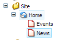
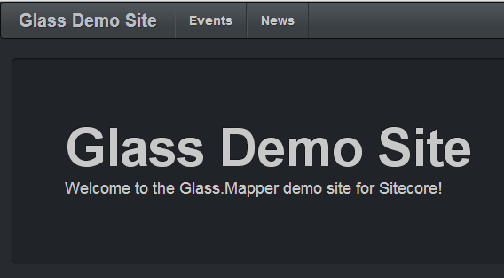

In this tutorial will will look at creating a top navigation menu which will allow us to see how we can get information about an item such as it's URL and also how to request child items.
I have added a couple of extra items in to the Sitecore content tree, these are just placeholders for now but the contain the Page Title field:
We need to make a model that will represent the items that will appear in this menu. To do this we have the following model:
Notice that for the list of child items we are using the MenuItem class, this will allow us to recursively descend down the tree if we need to.
In this model we have used two special property names Url and Children, when auto-mapping Glass.Mapper will populate the Url property with the Url of the item and the Children property with the Children of the item.
Our code behind is similar to the homepage sublayout but instead of getting the current item we get home item:
We can now use our model to easily render out the top navigation, notice how we can use the Url property in the links href:
With this all in place added this rendering to your MainLayout and compile the whole solution. Then when you navigate to the homepage you should see your new top navigation and if you hover over each link the URL of the item:
In this tutorial we have seen how we can get the information about an item, how we can tell a model to load child items and make simple links.